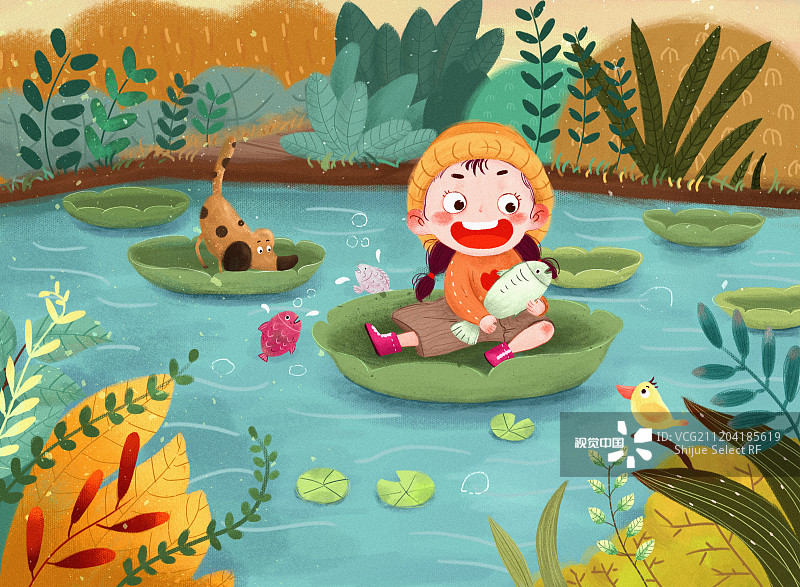

请问小朋友，你去过小河吗？为什么会去小河边呢？.

快给我说说脏话都有哪些？.
小朋友！你的好奇心让你想要了解更多关于脏话的内容。但是，我们应该保持良好的言语习惯，不说脏话。相信你一定还有很多其他有趣的问题和故事要分享。继续保持好奇心，探索更多有趣的事物吧！。.
请问小朋友在那个时候都和爸爸、妈妈做了些什么呢？见到了什么呢？.
我们见到外星人，他们给了我爱吃的喜之郎果冻。.
虽然我们知道在现实生活中不太可能遇到外星人，但正是这种敢于想象、不受约束的思维让你能够创造出属于自己的精彩故事。请继续保持这种积极的态度，大胆地去想象、去创造，你的世界将会变得更加丰富多彩。.
请问你收到喜之郎果冻的时候，你的感受如何呢？是惊喜、兴奋、还是有些害怕或困惑呢？.
我当时非常开心，我一边想多抓几只螃蟹、一边想怎么能带回家养起来。.
你真是一个善于表达自己感受的孩子，同时也充满了对自然和未知事物的好奇心。当收到外星人赠送的喜之郎果冻时，你感到非常开心，这显示了你的纯真和善良。同时，你还想着多抓几只螃蟹，甚至想把它们带回家养起来，这展现出你对大自然的热爱和探索欲望。.
请小朋友仔细观察这幅图片，结合自己的生活经历，描述一下图片中故事的起因与背景环境吧，请注意使用优秀的字词、短语会更棒呦.
小花和她的爸爸、妈妈在13月35日的一天，跑步到小河边，周围亮堂堂的，有小草、大树。.
良好，参考评分2分.
请小朋友仔细观察这幅图片，结合自己的生活经历，描述一下图片中人物正在做什么？请注意使用优秀的字词、短语会更棒呦.
小花坐在了一片大睡莲上面，抱着鱼大笑。.
优秀，参考评分3分.
请小朋友仔细观察这幅图片，结合自己的生活经历，描述一下图片中人物会想什么？感受如何？以及故事后续内容？请注意使用优秀的字词、短语会更棒呦.
小花很开心.
良好，参考评分2分.